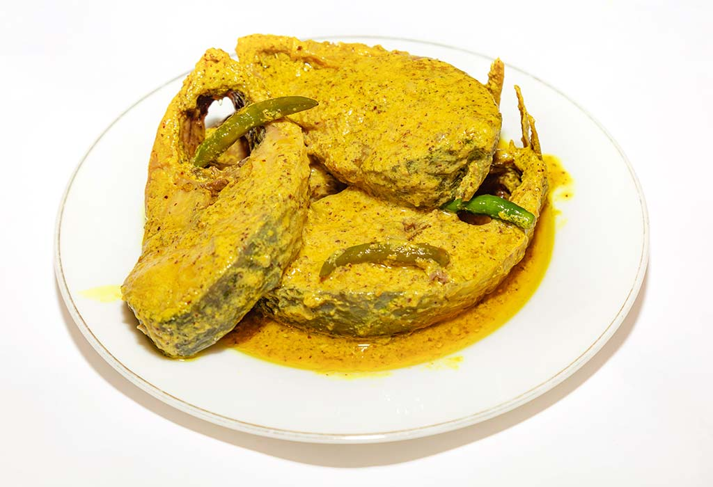

|
The Ilish, also known as Hilsa, is a popular food amongst the people of South Asia and in the Middle East, and especially with Bengalis. It is the national fish of Bangladesh. Bengali fish curry is a popular dish made with mustard oil or seed. It is also popular in India, especially West Bengal, Odisha, Tripura, Assam, Andhra Pradesh and Southern Gujarat and in Mizoram, and it is also exported globally. In North America (where ilish is not always readily available) other shad fish are sometimes used as an ilish substitute, especially in Bengali cuisine. This fish typically occurs near the East coast of North America, where fresh shad fish of similar taste can be found. In Bangladesh, Hilsa is sourced from the Padma-Meghna-Jamuna delta, which flows into the Bay of Bengal and Meghna (lower Brahmaputra), and Jamuna rivers; in India, the Rupnarayan (which has the Kolaghater Ilish), Ganges, Mahanadi, Chilka Lake, Narmada and Godavari rivers are famous for Hilsa fishing; in Pakistan, the Indus River is a source for the Hilsa fish. The freshwater fish are considered to be tastier than their marine variants. The fish has very sharp and tough bones, and might cause difficulty when eating for some. Ilish is an oily fish rich in omega 3 fatty acids. Recent experiments have shown its beneficial effects in decreasing cholesterol and insulin level. In Bengal, ilish can be smoked, fried, steamed, baked in young plantain leaves, prepared with mustard seed paste, curd, eggplant, different condiments like cumin. It is said that people can cook ilish in more than 50 ways. Ilish roe is also popular as a side dish. Ilish can be cooked in very little oil since the fish itself is laden with natural oils. |

|